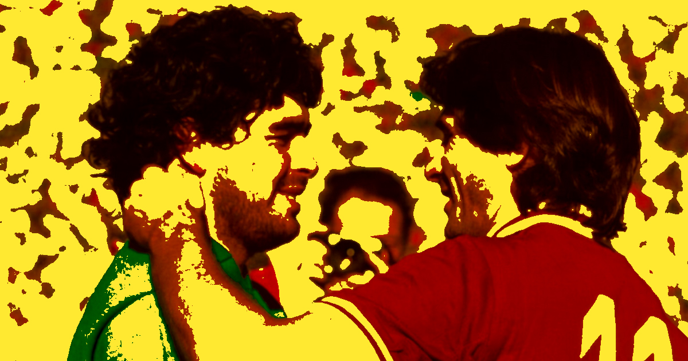

Historia
Ídolos
Scudetto
Contacto
Rivalidades
Historia
Ídolos
Scudetto
Contacto
Rivalidades
El SSC Napoli no solo compite dentro de la cancha: representa el orgullo del Sur de Italia frente al poderío económico y futbolístico del Norte. Esta rivalidad va mucho más allá del deporte y toca temas históricos, sociales y culturales. El Derby del Sole (contra la AS Roma) El Derby del Sole (o Clásico del Sol / Derby del Sud) es el enfrentamiento más importante entre los dos grandes equipos del centro-sur de Italia: Napoli y Roma. Significado del nombre: Representa los dos equipos más importantes de la “Italia soleada” (sur y centro). Ambos clubes son los más populares fuera del Norte industrial del país. Orígenes: El primer partido oficial entre ambos se jugó en 1928. Durante las décadas de 1970 y 1980, las hinchadas de Napoli y Roma eran hermanadas (gemellaggio). Compartían banderas, se apoyaban mutuamente y existía una fuerte amistad entre las Curvas. El quiebre: Todo cambió el 25 de octubre de 1987, cuando se rompió el hermanamiento entre las aficiones. Desde entonces, el derby se volvió mucho más intenso y a veces hostil. Importancia actual: Sigue siendo uno de los partidos más apasionantes de la Serie A. Representa la rivalidad entre dos ciudades mediterráneas con gran historia, pero también la lucha por ser “el equipo del Sur”. Dato curioso: A pesar de la rivalidad actual, muchos hinchas recuerdan con nostalgia la época en que napolitanos y romanos se unían contra los equipos del Norte.

Otras curiosidades del Napoli: El club es el único grande de Italia con una sola ciudad como base (no tiene derby local). En los años 80, Maradona convirtió los partidos contra los equipos del Norte en auténticas batallas épicas. La hinchada napolitana es famosa por su creatividad y pasión: los cánticos contra la Juventus son especialmente intensos. El Napoli es uno de los pocos clubes que ha logrado romper el dominio histórico del Norte ganando Scudetti.